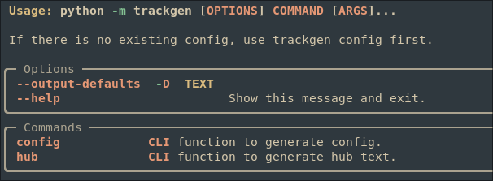

Journey through the Pipeline
- COOP Student from UC
- Computational Team
What Have I been doing?
trackgencompileqcatac_seq_mixtape- Mixtape Engineers
TODO Trackgen
- Generate UCSC trackhub config files ADD GIF HERE
Usage
trackgen --help # get some help trackgen config # generates trackgen config, finds required files trackgen hub # generates hub config

Containers and Modules
- Module is stable, container is unstable
module load trackgen trackgen --help # is equivalent to module load singularity singularity run $TEAM/lew2mz/containers/trackgen --help
Features
- Functional config language (modified JSON/YAML)
- Regex/glob based detection of files
- JSON/YAML to hub conversion
TODO Development strategy
- Some unit tests
- Easily extendable
- Automatic Documentation (LINK HERE)
TODO Architecture
| High level | Low level |
|---|---|
 |
Compileqc
- Generate QC sheet from pipeline
- Budget Multiqc
Usage
module load singularity
singularity run $TEAM/lew2mz/containers/compileqc --help

Output
- Configurable shortname
- Different Sheets for each data type

Features
Aggregate the following output
- Homer
- (TF/NONTF) RELI
- ENCODE
TODO Development strategy
- Test based development
- Object oriented
- Design before code
- Automatic documentation (LINK)
TODO ARCHITECTURE
| High level | Low level |
|---|---|
 |
 |
Atac seq mixtape
- Nextflow pipeline to automate analysis
Contribution
- Make UI
- compilqc integration
Make UI
- Intuitive interface
- Automatic help generation
- Error detection
Usage
make # or make help make config # will walk you through data entry make config # run it after data entry make run # run the pipeline (will fail)
TODO Demo
ADD GIF HERE
Advantages over the old method
- Users don’t have to learn a new configuration framework
- Options have sane defaults
Compileqc integration
- New and improved QC sheet
Implementation details
- Added an easy way to add new flags
- new mapping json input allows for shortname in QC sheet
- No module dependencies, uses singularity containers
Mixtape Engineers
- Gitlab repo that facilitates team organization
- Set of standards for new projects
Agile Board

TODO Architecture
Add folder structure here
Rationale (why not the wiki?)
The wiki is great for:
- User Instructions
- General Design documentation
The wiki is limited in:
- Version control
- Division of tasks
- File viewing